-
有两个不同的概念：像素（Pixel）和纹素（Texel）
-
在纹理上查询纹素有两种方式：
- 点查（Point Query）：小纹理，而要对纹理放大
- 范围查（Range Query）：动态生成
Mipmap
-
小纹理：低分辨率纹理应用到高分辨率设备，会产生马赛克问题
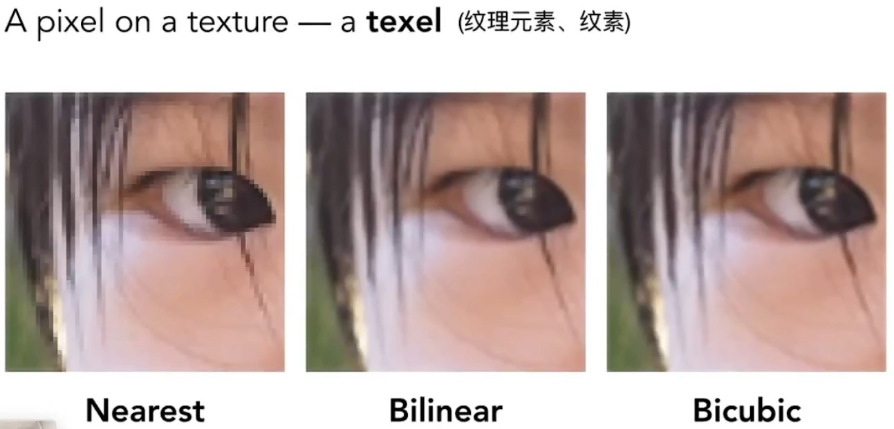
- Nearest：邻近点
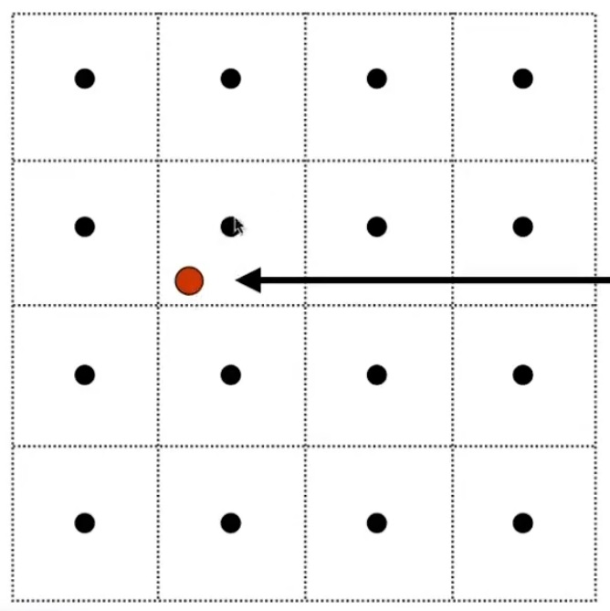 - Bilinear：双线性插值
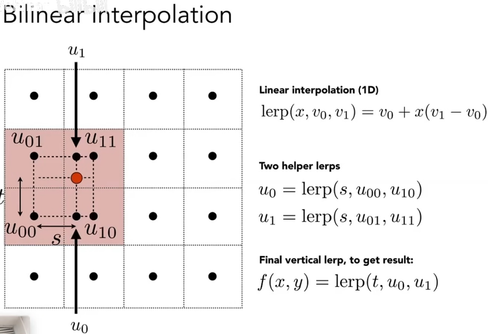 - Bicubic： 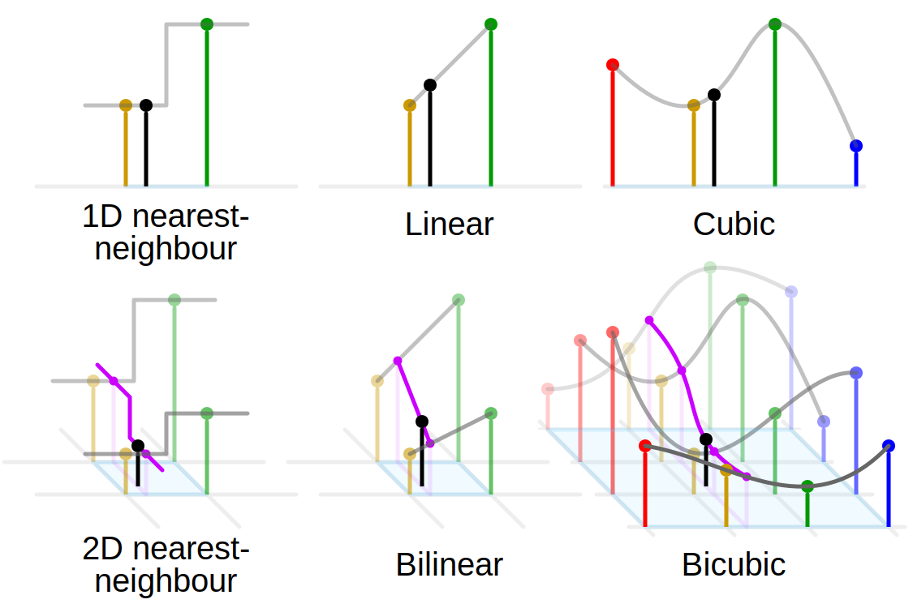
- Nearest：邻近点
-
大纹理：高分辨率纹理应用到低分辨率设备，会有 锯齿（Jaggies） 和 摩尔纹（Moire） 等 走样（Aliasing） 的问题
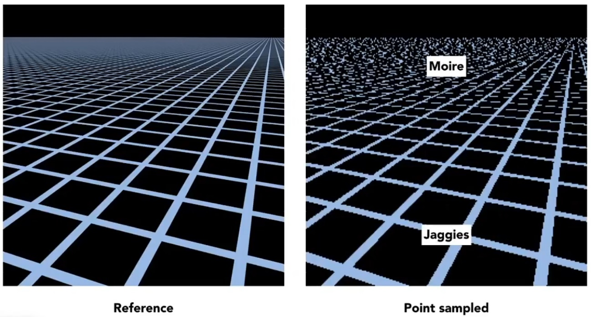
- 多重采样（supersampling）
-
面采样求平均值
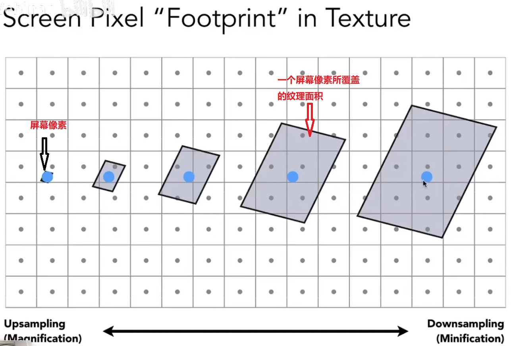
-
Mipmap：图像金字塔
- 具有速度快、只是近似值且只能是方形范围的特点
- 会额外占用
1/3的原始纹理显存空间，总共4/3的显存占用
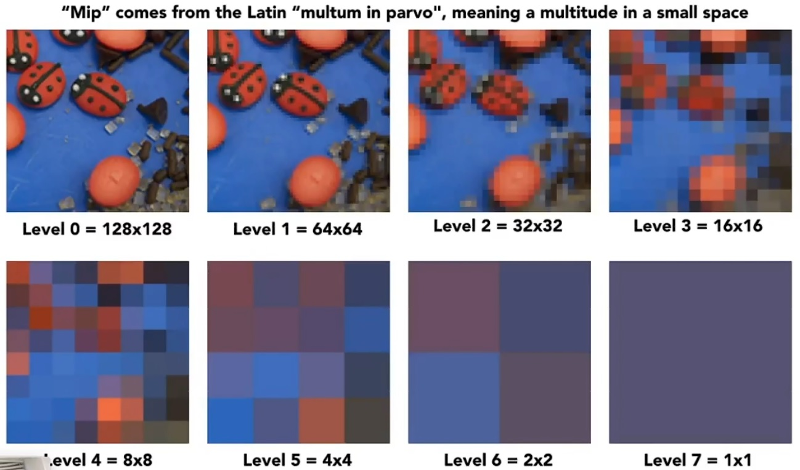
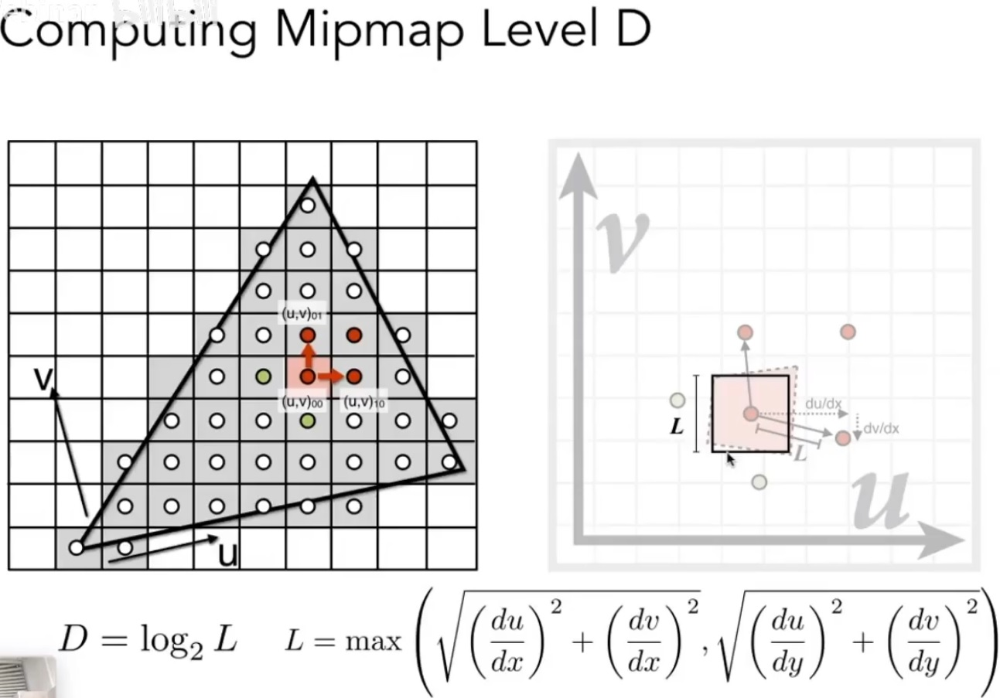
-
三线性插值（
Trilinear interpolation）:- 先在相邻两层
Mipmap中分别进行Bilinear插值，再在结果之上进行线性插值 - 局限性：会存在
overblur的问题
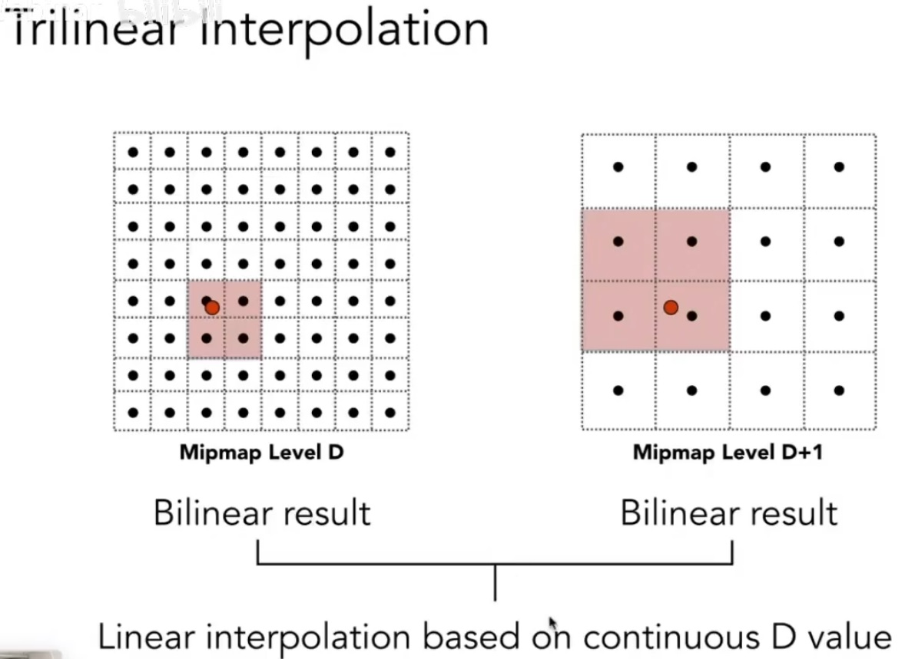
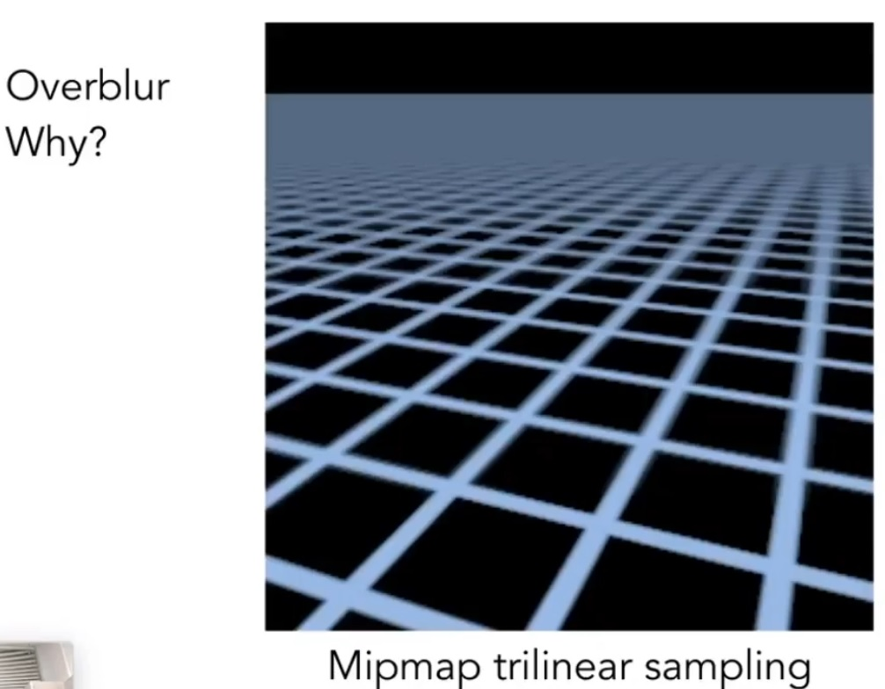
- 先在相邻两层
-
各项异性过滤（Anisotropic Filtering）（Ripmap）：
- 对于平行于坐标轴的矩形区域查询有较好的表现，但是对于非矩形区域仍是效果不佳
- 会额外占用 3 倍的显存空间
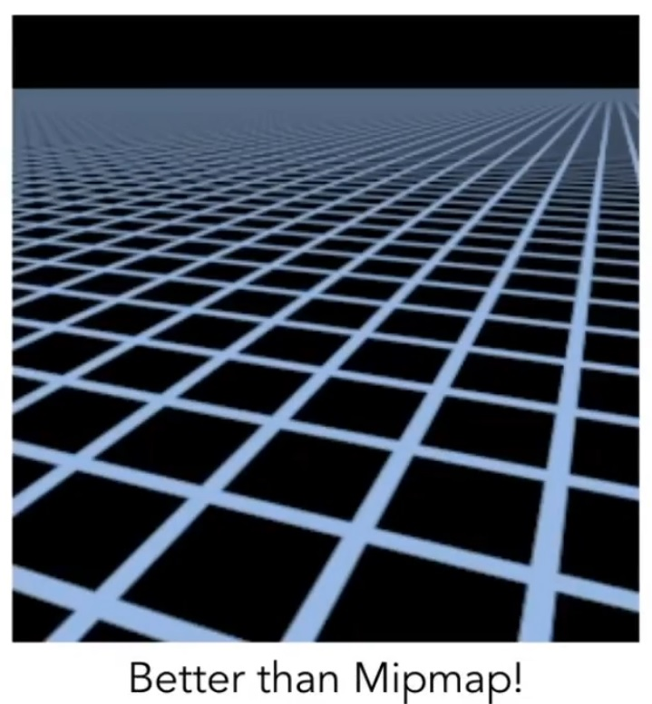
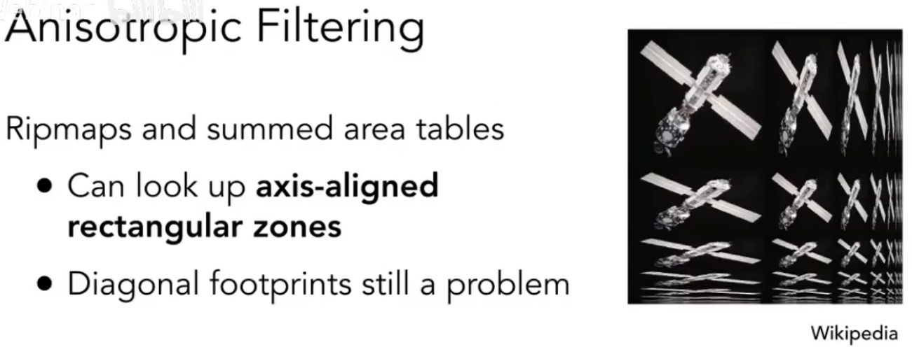
- 纹理映射的不规则区域
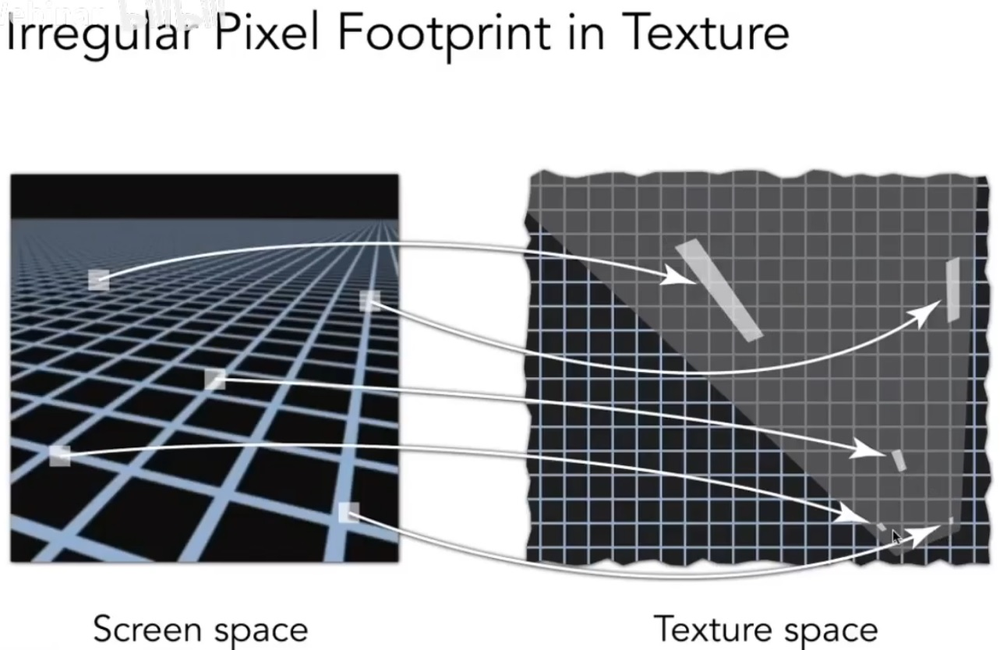
-
EWA Filtering:
将不规则区域划分为椭圆形查询区域，进行多次查询
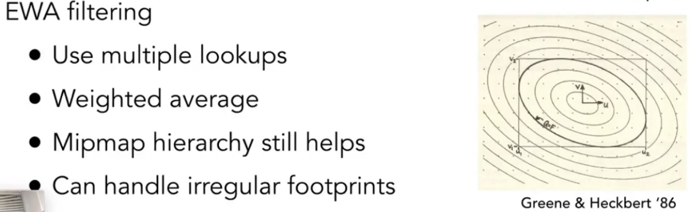
参考：